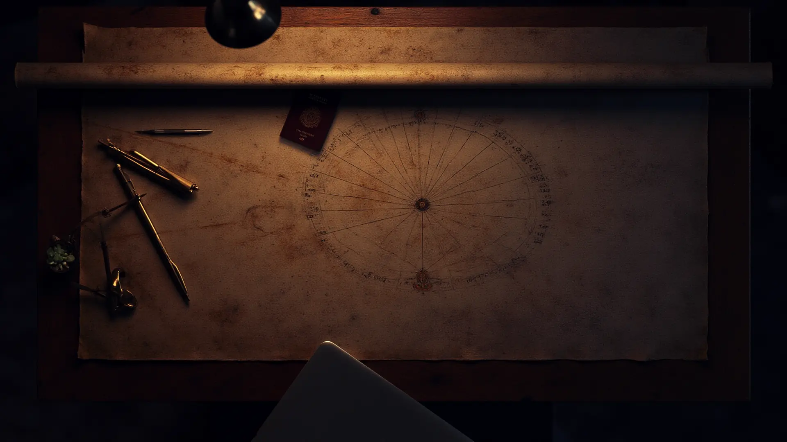
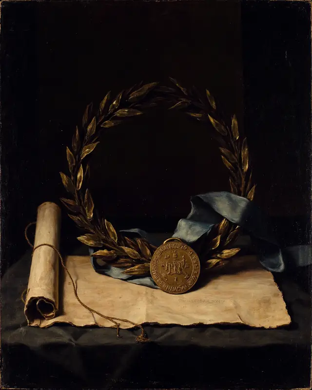
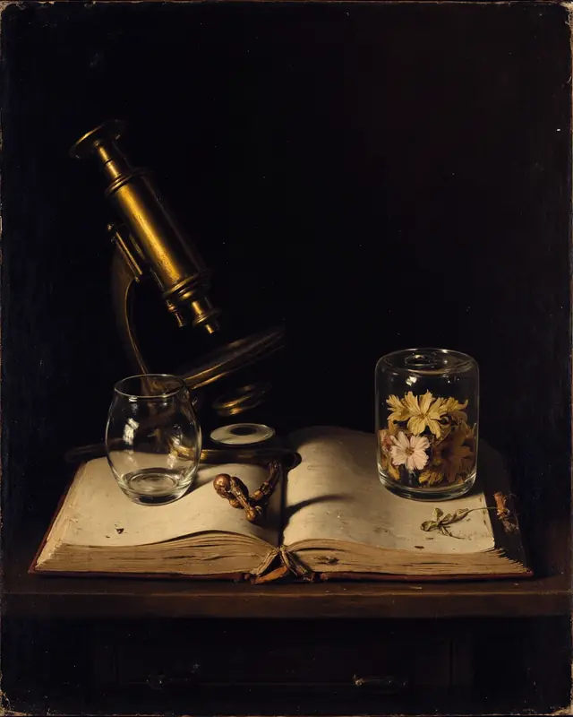
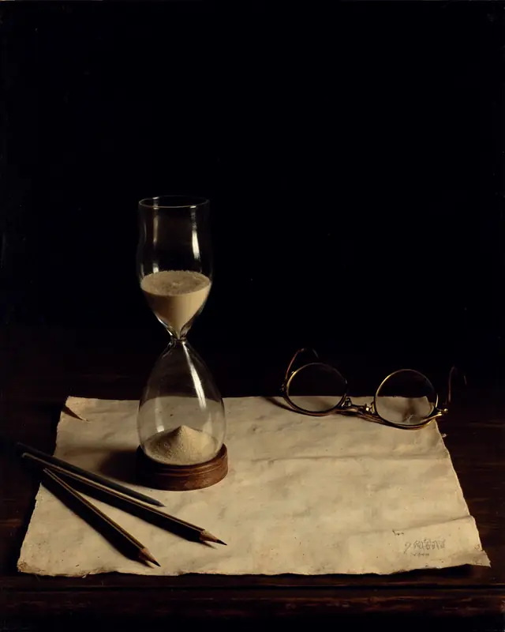
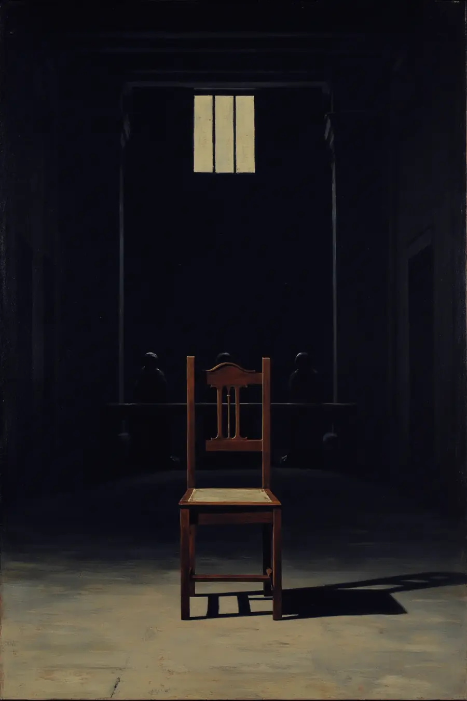

01
先边界，后材料
目标校与专业的边界不清楚时，任何材料准备都是赌博。定位阶段的产出是一份能解释的名单，不是一份愿望清单。
Boundary first. A shortlist you can defend, not a wish list.
定 位
Draw the boundary
before you build the file.
先画清目标校与专业的边界，再堆材料。
把无效试错压到最低。
Chapter I · 定位与选校
The shortlist is a decision,
not a wish list.
选校不是把梦校排成一列。它是在学术强度、专业匹配、录取现实与家庭承受力之间， 做一次能说得出理由的取舍——每一所进入名单的学校，都要回答"凭什么是它"。
预约定位咨询 ↗学术强度是否够得着
课程体系、GPA 走势、标化与竞赛的组合，对得上目标校的实际录取分布吗。
Academic fit专业方向说得通吗
申请的专业与已有经历之间，有没有一条讲得清的线。
Narrative fit这所学校要什么样的人
每所学校的偏好不同。招生倾向要拆到具体系所，而不是看综排。
Institutional read时间还够不够
距离截止还剩多少可用周数，决定了哪些短板值得补。
Runway冲刺与稳健怎么配
名单要有梯度。冲刺、匹配、稳健三档的比例，按真实概率分布来定。
Portfolio家庭的边界在哪
预算、地域、专业接受度——这些约束越早摊开，后面越少推翻重来。
Constraints选校沙盘 · Strategy Room
Every school on the list
answers one question.
自研的选校沙盘把画像、信号与规则收敛成一张可对话的名单。每所学校配一张决策卡，写清它凭什么在名单上。

目标校与专业的边界不清楚时，任何材料准备都是赌博。定位阶段的产出是一份能解释的名单，不是一份愿望清单。
Boundary first. A shortlist you can defend, not a wish list.
同一所学校，不同系所的录取偏好可以差很远。按专业方向读招生逻辑，而不是拿一张综合排名表往上套。
Read departments, not league tables.
名单要有梯度，比例按真实概率分布来定。多维条件收敛成清单，少拍脑袋；拿不准的单独留一档待复核。
Reach, match, safety — proportioned to real odds.
沙盘里有什么 · What the room holds
学生画像
把课程体系、成绩走势、标化与活动收敛成一组可比对的信号。 Coursework, trajectory, tests and activities as comparable signals.
规则匹配
按专业方向的录取逻辑做匹配，美本 / 英本 / 美英双轨分开走。 Matched by programme logic — US, UK, or dual-track.
信号校准
对照同方向申请人的实际分布校准这些信号，再决定哪些值得补。 Signals calibrated against real applicant distributions.
组合分档
冲刺 · 匹配 · 稳健 · 待复核，四档给出一份有梯度的名单。 Reach, match, safety, and a hold list for review.
学校决策卡
每所学校一张卡，写清它凭什么在名单上；旁边是横向对比区。 One decision card per school, plus a side-by-side compare view.
策略快照
名单与理由可导出为策略快照，下一轮复盘时对得上账。 Exportable strategy snapshots you can revisit later.
档 案
Every line in the file
earns its place.
竞赛、科研、标化协同推进，
每一项都要说得出它为什么在这儿。
Chapter II · 档案与背景提升
A file is an argument,
not an inventory.
背景提升不是把奖项堆到最多。四条线各有各的作用——竞赛证明学术强度， 科研证明方法，实习证明落地，标化把门槛清掉。哪条该重推、哪条够用即止， 取决于定位阶段画出来的那条边界。

宁少而准。选与目标专业同向、且认可度可核对的赛事，而不是凑数量。
Fewer, better contests — aligned with the target programme.

重点是你在里面真正做了什么、怎么想的。这段经历后面要能撑起文书与面试的追问。
Method over titles — research that can survive follow-up questions.
实习的价值在于让抽象兴趣接触真实约束——预算、期限、别人的意见。
One encounter with real constraints beats three résumé lines.

标化是门槛不是加分项。到了目标校的安全区间就收手，时间挪给别的线。
Tests are a threshold. Clear it, then move the hours elsewhere.
节点与材料 · Structure
申请季真正难的不是单项做不到，是十几条线并行时没人说得清现在到哪了。 时间线、材料与任务收束到一套可追踪的结构里——Terra 总台协助，顾问与学生看同一份进度。
看 Terra 怎么托住执行 ↗时间线
按截止日倒推排布，每个节点挂着它自己的前置条件。 Deadlines worked backwards, each node carrying its prerequisites.
材料与任务
谁在做、做到哪、还缺什么，一处可查，不靠对话记录翻。 Owner, status and gaps in one place — not buried in chat.
多角色门户
学生、家长、顾问各自的视图，看到的是同一套结构。 Student, parent and advisor views over one shared structure.
决策留痕
写入带 trace 的记录：什么时候改的、为什么改，后面复盘对得上账。 Traced writes — what changed, when, and why.
档案该怎么排，先看你手上已经有什么
先聊三十分钟，判断值不值得做、怎么做。不合适我们会直说。
文 书
Your voice,
not a template.
拒绝模板腔。
结构可以教，声音只能是你自己的。
Chapter III · 文书
Specific beats
impressive.
招生官一天读几十份文书，模板腔三行之内就露馅。我们不替学生写， 是把话问出来——追问到那个只有他才讲得出的细节，再帮他把结构立稳。
改的是什么 · 写法示意，非学员文书原文
模板腔 Before
我从小就对工程学充满浓厚的兴趣。
这次经历让我学到了团队合作的重要性。
我希望能进入贵校深造，成为一名优秀的工程师。
问题不在文法，在于任何人都能写。抽掉名字，看不出是谁。
保留声音 After
拆第三台的时候我才发现，之前两台都装反了。
队里三个人的方案都比我的好，我负责说服他们选哪一个。
我想去能把这套东西做到能上路的地方。
同一件事，换成具体的、可追问的说法。招生官能顺着往下问——这才是留得下印象的文书。
“结构可以教，
声音只能是你自己的。 引力坊 · 文书方法
先问，后写
动笔前的访谈比改稿更花时间。素材不够具体，怎么润色都是空的。 Interview first. No amount of editing rescues vague material.
结构深度打磨
主线、证据、转折各归其位；删掉所有不为主线服务的漂亮句子。 Spine, evidence, turn — and nothing that doesn't serve them.
不代笔
改到最后一稿仍然是学生的语气。面试时他要能认得出自己写的每一句。 It stays his voice — he has to own every line at interview.
与档案对齐
文书里的每处引证，档案里都找得到对应的那件事。 Every claim in the essay maps to something real in the file.
文书从哪句开始写，聊过才知道
先聊三十分钟，判断值不值得做、怎么做。不合适我们会直说。
面 试
Pressure,
rehearsed in advance.
模拟高压，校准表达。
第一次被追问，不该发生在正式面试里。
高压模拟 · Mock under pressure
The first hard question
should not be the real one.
模拟面试的目的不是背答案，是把「被追问到答不上来」这件事提前发生完。 按目标校的实际风格对齐节奏：牛剑那种一路追问到边界的学术面， 和美本那种看你怎么讲自己的对话面，练法完全不同。

Not answers.
Reasoning out loud.
练的不是标准答案，是当场把思路讲清楚的能力——包括承认某处没想明白。
为什么是这个专业，而不是隔壁那个？
考的是动机有没有到具体的程度。答得出两个专业的实际差别，才算真想过。
动机 · Motivation你刚才那个结论，换一组条件还成立吗？
考的是推理经不经得起挪动。学术面试的追问基本都往这个方向去。
推理 · Reasoning这段经历里，你做错了什么？
考的是反思是否真实。全是顺利和收获的版本，一追就空。
反思 · Reflection这个问题我没想过——可以吗？
可以。说清楚你会怎么去想，比硬编一个答案得分高。这一条要专门练。
诚实 · Candour对齐招生官逻辑
按目标校与系所的实际面试风格设计题目，而不是通用题库。 Built to the department's actual interview style.
录下来回看
语速、填充词、眼神落点——这些自己讲的时候感觉不到。 Pace, filler words, where the eyes go — invisible from the inside.
面试的第一次追问，别留到正式场合
先聊三十分钟，判断值不值得做、怎么做。不合适我们会直说。
系 统
One source of truth
for the whole season.
进度、任务、材料与决策节点集中一处。
顾问与学生看到同一套结构。
Chapter V · 自研软件矩阵
Consulting is the product.
The software is the proof.
工程背景不是简历上的一行字。申请季里最重的执行——进度、材料、通信、选校、测评——我们做成了自己的软件。产品持续迭代中，官网只做展示与预约演示。
01
Terra · 中枢总台
多角色门户、时间线、打卡与探索模块，配带调用链路记录的接口与 AI 推荐摘要。顾问、学生与家长看到同一套结构，不再靠微信群对齐信息。
One desk. Advisor, student and parent see the same structure.
02
Life-Echo · 结构化测评
基于人生故事访谈与大五人格，输出可用的心理画像，而不是一句星座式结论。
Structured assessment that grounds positioning and essays.
03
选校沙盘 · 申请邮箱
多维条件收敛成清单，每所学校一张决策卡；申请季往来邮件集中托管，关键节点不淹没在收件箱里。
Multi-factor lists, and correspondence that stays traceable.
结 果
Outcomes speak.
Different profiles, one method.
结果说话。背景不同，方法一致。
案例为往期学员真实录取，背景要点已匿名化。
Chapter VI · 21 例录取
按地区分布。点亮一颗星看它的背景要点。
你的背景对得上哪一档，我们可以直接说
先聊三十分钟，判断值不值得做、怎么做。不合适我们会直说。
团 队
Expertise
you can verify.
专业，可核对。
工程与招生背景摆在明处，不做流水线中介。
创始人 & 首席顾问
莱斯大学电子工程本硕（Rice University, EE MS/BS），约八年留学咨询经验。硬核技术背景与精英教育理解的交叉点——拒绝流水线作业，坚持数据驱动的定制化申请策略。
M.S./B.S. Electrical Engineering, Rice University. Eight years in admissions consulting.
学术总监
宾夕法尼亚大学教育学博士，前招生官，十五年从业经验。熟悉招生政策的实际运作方式，负责文书方向把关与长线学术规划。
Ed.D., University of Pennsylvania. Former admissions officer, 15 years.
资深顾问
伯克利 MBA，长期负责商科与 STEM 方向的申请。擅长把职业目标倒推成可执行的本科与研究生路径。
MBA, UC Berkeley. Business and STEM admissions.
想聊聊，直接找顾问
先聊三十分钟，判断值不值得做、怎么做。不合适我们会直说。
联 系
Thirty minutes
before anything else.
先聊三十分钟，判断你的情况值不值得做、怎么做。
不合适我们会直说。
 扫码添加顾问
扫码添加顾问